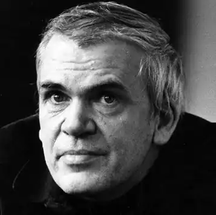
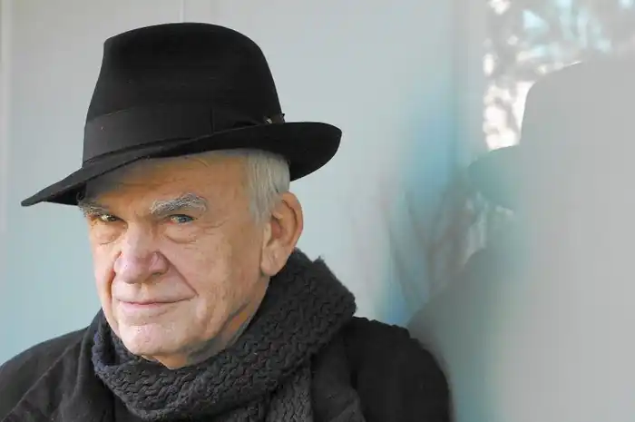
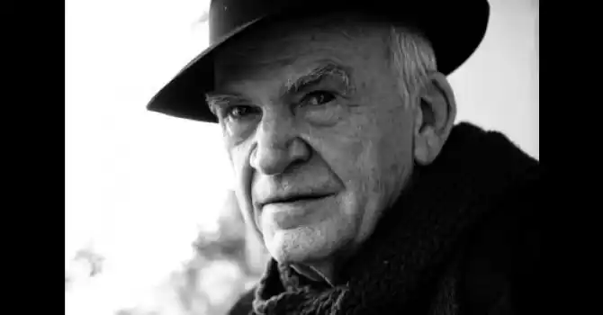

МІЛАН КУНДЕРА
(народився 1929)
Мілан Кундера народився 1 квітня 1929 року в Чехословаччині в місті Брно. Батько Мілана був музикознавцем і ректором університету в Брно. Під час навчання в середній школі Мілан написав перші вірші. Після Другої світової війни він підпрацьовував різноробом, джазовим музикантом. В університеті вивчав музику, кіно, літературу й естетику. По закінченні університету працював асистентом і пізніше професором на факультеті кіно Празької Академії. Писав поеми, есе й драматичні п'єси. У той же самий час він працює в редакціях літературних журналів "Literarni noviny" і "Listy". У комуністичній партії перебував з 1948 по 1950 роки. У 1950 році був виключений із лав комуністичній партії за індивідуалістські тенденції. Після закінчення Академії в 1952 році викладає світову літературу в кіноакадемії. З 1956 року по 1970 рік знову перебуває у лавах Комуністичній партії. У 1953 році публікує свою першу книгу. До середини 50-х займається перекладами, есе, драматургією. Після виходу добірки віршів і 3-х томів оповідань "Смішні любові" (1968), до письменника прийшло визнання. Перший роман "Жарт" (1967) присвячений темі сталінізму. Після виступу Хрущова на XX з'їзді КПРС з викриттям культу особи Сталіна ця тема набула популярності. Вже у першому своєму романі автор постав зрілим майстром критичної оцінки політичних подій, котрий на все має свою власну думку Наступні романи письменника — "Життя не тут" (1969), "Вальс на прощання" (1970) — підтвердили, що у світовій літературі з'явився талановитий письменник із своєрідним поглядом на світ людини та способи його зображення. Після радянської окупації Чехословаччини у серпні 1968 року Мілан Кундера бере участь у "Празькій весні", за що був позбавлений можливості викладати. Його книги були вилучені з усіх бібліотек країни. Через обвинувачення у співучасті в революційних подіях 1968 року письменника позбавили можливості публікуватися (з 1970 року). У 1975 році Мілана Кундеру запросили професором у Рейнський університет (Франція). Він їде до Франції, щоб уже не повернутися на батьківщину. Після виходу роману "Книга сміху й забуття" (1979), в якому в характерній для автора гумористично-критичній манері аналізувались останні події, чеський уряд позбавив його чеського громадянства. Наступні романи Кундери було заборонено видавати у Чехословаччині. Лише у 1981 році Мілан Кундера отримує французьке громадянство (до того часу він перебував на території Франції як політичний емігрант). Найзначнішим твором Кундери вважається роман "Невимовна легкість буття" (1984) — підсумкова праця автора в осмисленні подій "Празької весни". Перебуваючи довгий час у Франції, Кундера настільки освоює французьку, що, починаючи з 1990 року, пише нею наступні романи: "Безсмерття" (1990), "Неспішність" (1995), "Справжність" (1997), "Байдужість" (2000). Книги Мілана Кундери перекладені майже всіма мовами світу й вважаються класикою ХХ-го сторіччя, а самого письменника вважають — одним з видатних романістів другої половини ХХ-го століття. "Невимовна легкість буття" Цей роман — розповідь про життя трьох головних героїв — хірурга Томаша, його коханки Сабіни та дружини Терези. їхні взаємини тривають на тлі окупації радянськими військами Чехословаччини у 1968 році. Життя героїв ніби розпадається на три періоди: до "Празької весни", під час страшних подій, коли російські танки просто й буденно стоять посеред Праги, і після загибелі демократичних надій чехословацького суспільства. Всі події у романі мають політично-еротичне забарвлення, бо політичні катаклізми в суспільстві подаються паралельно з зображенням інтимного та громадського життя героїв. Сім розділів, що входять до складу роману, подають основні події, і в кожній з них змінюється головний герой, навколо якого розгортаються дії: спочатку це Томаш, далі — Тереза, потім — Сабіна й так далі. Ми знайомимося з Томашем і бачимо його сучасне, раз по раз заглядаємо у його минуле і, таким чином, маємо уявлення про внутрішній світ героя, його уподобання. Виявляється, герой уже був одружений і мав дитину, але розлучився, бо передовсім цінує особисту свободу. Стосунки з жінками, а їх у нього чимало, він будує на принципах відсутності взаємних зобов'язань. Усі знайомі дівчата-коханки, представницею яких є Сабіна, мають рівні права на Томаша. І ось у житті героя з'являється Тереза, яка перевертає налагоджений світ лікаря, і він навіть погоджується одружитися з нею. Нове подружжя живе щасливо до вступу радянських танків у Прагу. Герой на прохання Терези залишає Чехословаччину й разом з нею переїздить до Швейцарії, де героїня починає сумувати й повертається на батьківщину. Повагавшись, Томаш їде за нею...Життя продовжується... На початку роману автор вдається до філософських роздумів про сутність життя, про можливість чи неможливість повтору прожитого та про особливе відчуття легкості буття людини, яка позбавлена тяжіння вічного повернення. Подальший роман художньо відтворює цю невимовну легкість буття... ОСНОВНІ ТВОРИ: "Жарт" (1967), "Життя не тут" (1969), "Вальс на прощання" (1970), "Невимовна легкість буття" (1984), "Безсмерття" (1990), "Неспішність" (1995), "Справжність" (1997), "Байдужість" (2000). ЛІТЕРАТУРА: 1. Мельников Г. Чешская литература XX века // Энциклопедия для детей: В 35 т.— М., 2001.— Т. 15. Всемирн. лит. Ч. 2. XIX и XX.— С.491-493.; 2. Андреев Л.Г. Чем же закончилась история второго тысячелетия? (Художественный синтез и постмодернизм) // Зарубежная литература второго тысячелетия. 1000-2000.— М., 2003.; 3. Постмодернизм и творчество У. Эко // Зарубежная литература XX века / Под ред. В.М.Толмачева.— М., 2003.-С. 567-590.